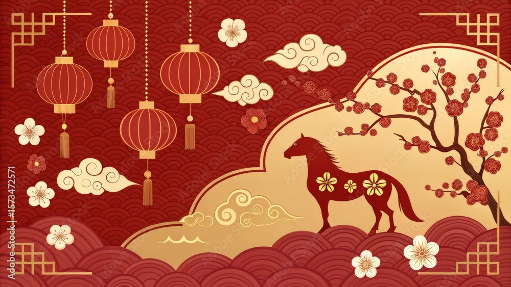

CELEBRATING MALAYSIA'S LIVING CULTURE
From the lantern-lit streets of Chinese New Year to the sacred feasts of Hari
Raya,
every season in Malaysia tells a story of belonging

FESTIVAL
CHINESE NEW YEAR
JAN – FEB
JANUARY TO FEBRUARY
Chinese New Year fills Malaysia's streets and shophouses with two weeks of gilded lanterns, lion dance processions, and the thunder of firecrackers. Families gather for reunion dinners laden with symbolic dishes, while red envelopes pass between generations in a ritual of gratitude and blessing that stretches back centuries across the peninsula's Straits Chinese and Hokkien communities.
FEATURED SYMBOLISM :
Double fish red packets & red hanging lanterns